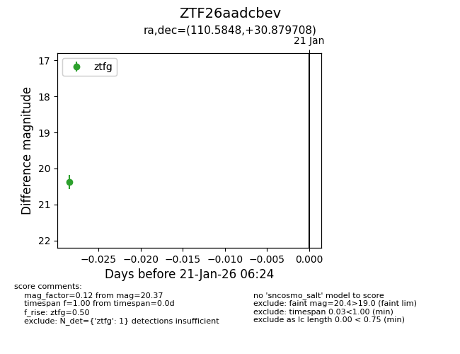
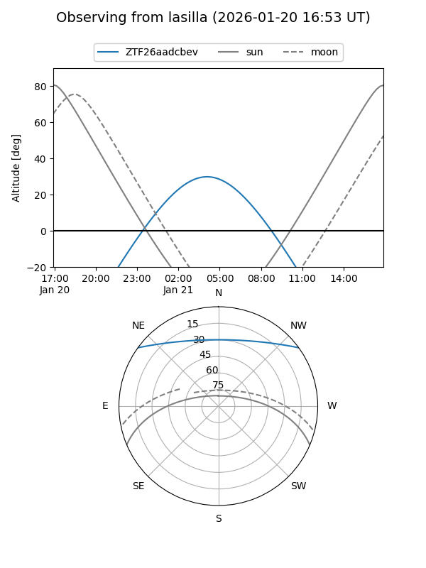
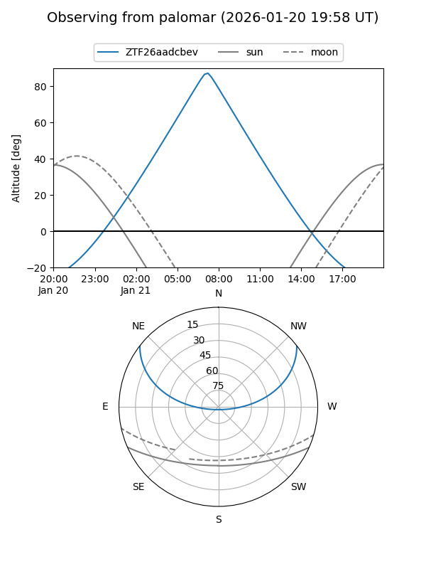

ZTF26aadcbev
Target ZTF26aadcbev at 2026-01-21 06:26
Aliases and brokers:
FINK: link
Lasair: link
ALeRCE: link
alt names
ZTF26aadcbev (ztf,fink_ztf)
Coordinates:
equatorial (ra, dec) = 110.5848,+30.87971
equatorial (HMS+DMS) = 07:22:20.34,+30:52:46.95
galactic (l, b) = (187.5131,+19.67622)
Flags:
Photometry:
last ztfg=20.37
1 ztfg detections
Lightcurve

Visibility


Additional plots